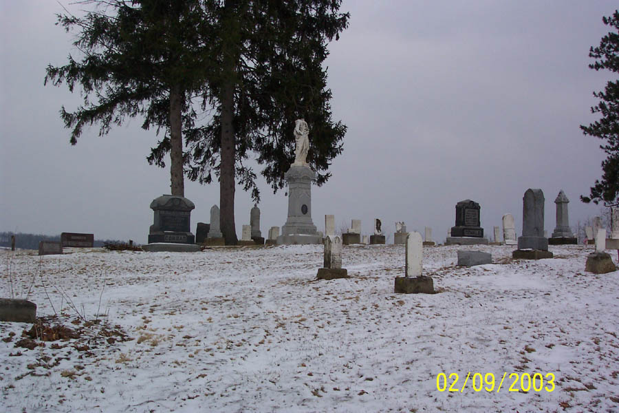

The Death Angel of Saltillo Cemetery

In a cemetery near Saltillo in Holmes County on County Road 310 off County Road 68, there is a stone angel. Touching the angel's hand will bring bad luck, according to legend; staring into its eyes will bring about your death. In recent years the death angel has been vandalized badly, and its head--after the fashion of death angels everywhere--has been broken off.
Back